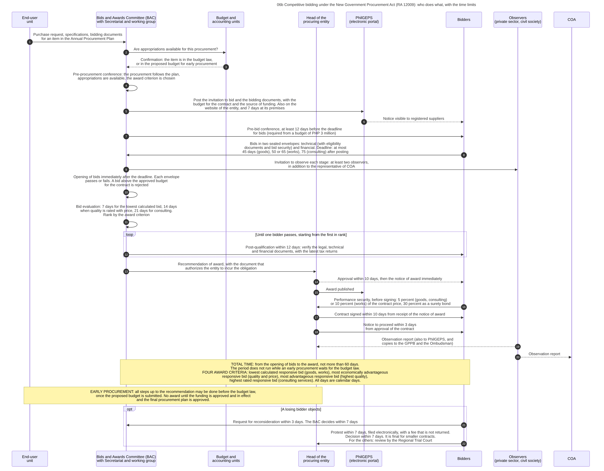

Diagram 06b · Mermaid sequence diagram
Competitive bidding under the New Government Procurement Act (RA 12009): who does what, with the time limits
Question: From the request of the end-user to the notice to proceed, which body acts at each step, and how long may each step take?
In: 06. Procurement

What the diagram shows
- Question: from the request of the end-user to the notice to proceed, which body acts at each step, and how long may each step take?
- Sources: the steps and the time limits are those of the Implementing Rules of Republic Act No. 12009, in the text published on 10 February 2025 [IRR12009]: procurement plan s.7.8, pre-procurement conference s.49.1, the four award criteria s.49.2, posting s.50.3, pre-bid conference s.51, eligibility s.52, two envelopes and the periods for bids s.54, bid security s.56, opening s.58, preliminary examination s.59, ceiling s.60, evaluation s.61 and s.62, post-qualification s.63, recommendation and award s.66, total period s.67, performance security s.68, observers s.43, protest ss.83-85, early procurement s.12. The period for the notice to proceed is from the Act [RA12009 s.66]: the Rules repeat the ten days for the contract and do not state this period.
- A difference between the act and the rules in my notes: for the opening of bids I noted one day after the deadline from the Act, and the Rules say that the bids are opened immediately after the deadline [IRR12009 s.58]. The diagram follows the Rules.
- Limit: later amendments of the Rules are not in the text that I read. The Rules leave the details of each step to manuals and standard forms of the GPPB, which I did not open.
- General knowledge, not opened in a source here: who asks whom in steps 2 and 3 (the Rules require that the conference confirms the availability of appropriations, and they do not describe the exchange), and the publication of the award in step 15.
Steps
The numbers are those of the diagram.
| Step | Who acts | Towards whom | What is done or passed | Basis |
|---|---|---|---|---|
| 1 | End-user unit | Bids and Awards Committee (BAC) with Secretariat and working group | Purchase request, specifications, bidding documents for an item in the Annual Procurement Plan | IRR12009 s.7.8. Purchase request: GAM-V2 App.60 |
| 2 | Bids and Awards Committee (BAC) with Secretariat and working group | Budget and accounting units | Are appropriations available for this procurement? | IRR12009 s.49.1. Who asks whom: GK |
| 3 | Budget and accounting units | Bids and Awards Committee (BAC) with Secretariat and working group | Confirmation: the item is in the budget law, or in the proposed budget for early procurement | IRR12009 s.49.1. Who asks whom: GK |
| 4 | Bids and Awards Committee (BAC) with Secretariat and working group | (own action) | Pre-procurement conference: the procurement follows the plan, appropriations are available, the award criterion is chosen | IRR12009 s.49.1, s.49.2 |
| 5 | Bids and Awards Committee (BAC) with Secretariat and working group | PhilGEPS (electronic portal) | Post the invitation to bid and the bidding documents, with the budget for the contract and the source of funding. Also on the website of the entity, and 7 days at its premises | IRR12009 s.50.2, s.50.3 |
| 6 | PhilGEPS (electronic portal) | Bidders | Notice visible to registered suppliers | IRR12009 s.20.2.1 |
| 7 | Bids and Awards Committee (BAC) with Secretariat and working group | Bidders | Pre-bid conference, at least 12 days before the deadline for bids (required from a budget of PHP 3 million) | IRR12009 s.51 |
| 8 | Bidders | Bids and Awards Committee (BAC) with Secretariat and working group | Bids in two sealed envelopes: technical (with eligibility documents and bid security) and financial. Deadline: at most 45 days (goods), 50 or 65 (works), 75 (consulting) after posting | IRR12009 s.54.1, s.54.5, s.52.1, s.56.2 |
| 9 | Bids and Awards Committee (BAC) with Secretariat and working group | Observers (private sector, civil society) | Invitation to observe each stage: at least two observers, in addition to the representative of COA | IRR12009 s.43.1 |
| 10 | Bids and Awards Committee (BAC) with Secretariat and working group | (own action) | Opening of bids immediately after the deadline. Each envelope passes or fails. A bid above the approved budget for the contract is rejected | IRR12009 s.58, s.59, s.60.1 |
| 11 | Bids and Awards Committee (BAC) with Secretariat and working group | (own action) | Bid evaluation: 7 days for the lowest calculated bid, 14 days when quality is rated with price, 21 days for consulting. Rank by the award criterion | IRR12009 s.61.2.5, s.61.7, s.62 |
| 12 | Bids and Awards Committee (BAC) with Secretariat and working group | Bidders | Post-qualification within 12 days: verify the legal, technical and financial documents, with the latest tax returns | IRR12009 s.63 |
| 13 | Bids and Awards Committee (BAC) with Secretariat and working group | Head of the procuring entity | Recommendation of award, with the document that authorizes the entity to incur the obligation | IRR12009 s.66.1 |
| 14 | Head of the procuring entity | Bidders | Approval within 10 days, then the notice of award immediately | IRR12009 s.66.2, s.66.3 |
| 15 | Head of the procuring entity | PhilGEPS (electronic portal) | Award published | GK |
| 16 | Bidders | Head of the procuring entity | Performance security, before signing: 5 percent (goods, consulting) or 10 percent (works) of the contract price, 30 percent as a surety bond | IRR12009 s.68 |
| 17 | Head of the procuring entity | Bidders | Contract signed within 10 days from receipt of the notice of award | IRR12009 s.66.5 |
| 18 | Head of the procuring entity | Bidders | Notice to proceed within 3 days from approval of the contract | RA12009 s.66 |
| 19 | Observers (private sector, civil society) | Head of the procuring entity | Observation report (also to PhilGEPS, and copies to the GPPB and the Ombudsman) | IRR12009 s.43.4 |
| 20 | Observers (private sector, civil society) | COA | Observation report | IRR12009 s.43.4 |
| 21 | Bidders | Bids and Awards Committee (BAC) with Secretariat and working group | Request for reconsideration within 3 days. The BAC decides within 7 days | IRR12009 s.83 |
| 22 | Bidders | Head of the procuring entity | Protest within 7 days, filed electronically, with a fee that is not returned. Decision within 7 days. It is final for smaller contracts. For the others: review by the Regional Trial Court | IRR12009 ss.83-85 |
Code

---
title: "06b Competitive bidding under the New Government Procurement Act (RA 12009): who does what, with the time limits"
---
sequenceDiagram
autonumber
%% QUESTION THIS DIAGRAM ANSWERS: from the request of the end-user to the notice to proceed, which body acts at each step, and how long may each step take?
%% SOURCES: the steps and the time limits are those of the Implementing Rules of Republic Act No. 12009, in the text published on 10 February 2025 [IRR12009]: procurement plan s.7.8, pre-procurement conference s.49.1, the four award criteria s.49.2, posting s.50.3, pre-bid conference s.51, eligibility s.52, two envelopes and the periods for bids s.54, bid security s.56, opening s.58, preliminary examination s.59, ceiling s.60, evaluation s.61 and s.62, post-qualification s.63, recommendation and award s.66, total period s.67, performance security s.68, observers s.43, protest ss.83-85, early procurement s.12. The period for the notice to proceed is from the Act [RA12009 s.66]: the Rules repeat the ten days for the contract and do not state this period.
%% A DIFFERENCE BETWEEN THE ACT AND THE RULES IN MY NOTES: for the opening of bids I noted one day after the deadline from the Act, and the Rules say that the bids are opened immediately after the deadline [IRR12009 s.58]. The diagram follows the Rules.
%% LIMIT: later amendments of the Rules are not in the text that I read. The Rules leave the details of each step to manuals and standard forms of the GPPB, which I did not open.
%% GENERAL KNOWLEDGE, NOT OPENED IN A SOURCE HERE: who asks whom in steps 2 and 3 (the Rules require that the conference confirms the availability of appropriations, and they do not describe the exchange), and the publication of the award in step 15.
participant EU as End-user<br/>unit
participant BAC as Bids and Awards Committee (BAC)<br/>with Secretariat and working group
participant FIN as Budget and<br/>accounting units
participant HOPE as Head of the<br/>procuring entity
participant PG as PhilGEPS<br/>(electronic portal)
participant BID as Bidders
participant OBS as Observers<br/>(private sector, civil society)
participant COA as COA
EU->>BAC: Purchase request, specifications, bidding documents<br/>for an item in the Annual Procurement Plan
BAC->>FIN: Are appropriations available for this procurement?
FIN-->>BAC: Confirmation: the item is in the budget law,<br/>or in the proposed budget for early procurement
BAC->>BAC: Pre-procurement conference: the procurement follows the plan,<br/>appropriations are available, the award criterion is chosen<br/>#nbsp;
BAC->>PG: Post the invitation to bid and the bidding documents, with the<br/>budget for the contract and the source of funding. Also on the<br/>website of the entity, and 7 days at its premises
PG-->>BID: Notice visible to registered suppliers
BAC->>BID: Pre-bid conference, at least 12 days before the deadline<br/>for bids (required from a budget of PHP 3 million)
BID->>BAC: Bids in two sealed envelopes: technical (with eligibility<br/>documents and bid security) and financial. Deadline: at most<br/>45 days (goods), 50 or 65 (works), 75 (consulting) after posting
BAC->>OBS: Invitation to observe each stage: at least two observers,<br/>in addition to the representative of COA
BAC->>BAC: Opening of bids immediately after the deadline. Each envelope<br/>passes or fails. A bid above the approved budget<br/>for the contract is rejected<br/>#nbsp;
BAC->>BAC: Bid evaluation: 7 days for the lowest calculated bid, 14 days<br/>when quality is rated with price, 21 days for consulting.<br/>Rank by the award criterion<br/>#nbsp;
loop Until one bidder passes, starting from the first in rank
BAC->>BID: Post-qualification within 12 days: verify the legal, technical<br/>and financial documents, with the latest tax returns
end
BAC->>HOPE: Recommendation of award, with the document that<br/>authorizes the entity to incur the obligation
HOPE-->>BID: Approval within 10 days, then the notice of award immediately
HOPE->>PG: Award published
BID->>HOPE: Performance security, before signing: 5 percent (goods, consulting)<br/>or 10 percent (works) of the contract price, 30 percent as a surety bond
HOPE->>BID: Contract signed within 10 days from receipt of the notice of award
HOPE->>BID: Notice to proceed within 3 days<br/>from approval of the contract
OBS-->>HOPE: Observation report (also to PhilGEPS, and<br/>copies to the GPPB and the Ombudsman)
OBS-->>COA: Observation report
Note over BAC,BID: TOTAL TIME: from the opening of bids to the award, not more than 60 days.<br/>The period does not run while an early procurement waits for the budget law.<br/>FOUR AWARD CRITERIA: lowest calculated responsive bid (goods, works), most economically advantageous<br/>responsive bid (quality and price), most advantageous responsive bid (highest quality),<br/>highest rated responsive bid (consulting services). All days are calendar days.
Note over EU,HOPE: EARLY PROCUREMENT: all steps up to the recommendation may be done before the budget law,<br/>once the proposed budget is submitted. No award until the funding is approved and in effect<br/>and the final procurement plan is approved.
opt A losing bidder objects
BID->>BAC: Request for reconsideration within 3 days. The BAC decides within 7 days
BID->>HOPE: Protest within 7 days, filed electronically, with a fee that is not returned.<br/>Decision within 7 days. It is final for smaller contracts.<br/>For the others: review by the Regional Trial Court
end